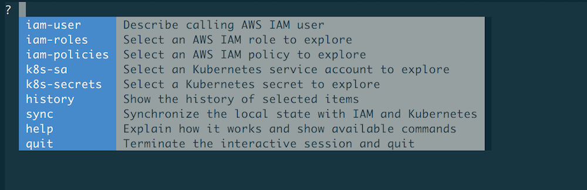
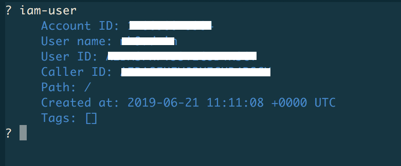
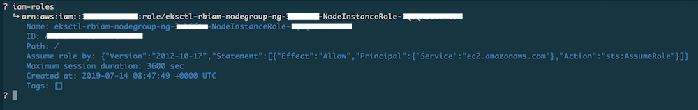
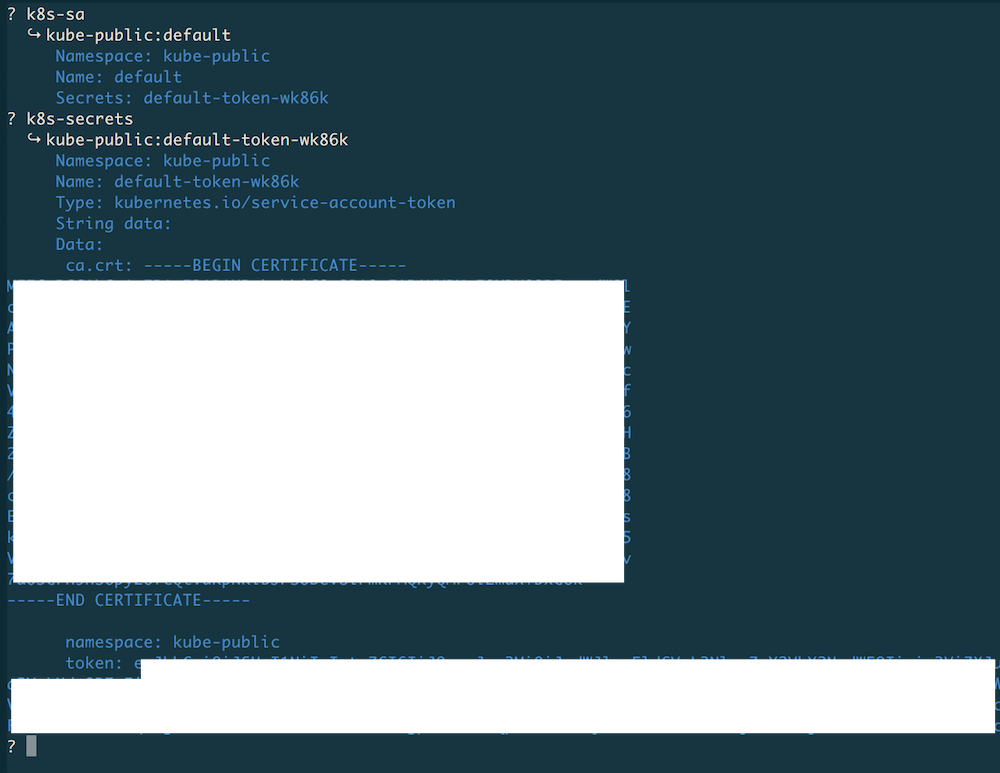

Getting Started¶
Warning
This tool is heavy WIP and currently the CLI binaries are available only for macOS and Linux platforms. Please raise an issue on GitHub if you're experiencing problems or something does not quite work like described in here.
This guide walks you through the setup and usage of rbIAM.
Prerequisites¶
In order for you to use rbIAM, the following must be true:
- You have credentials for AWS configured.
- You have access to an EKS cluster or in general an Kubernetes-on-AWS cluster.
- You have
kubectlinstalled.
Install¶
To install rbIAM execute the following two commands. First, download
the respective binary (here shown for macOS) like so:
1 | curl -L https://github.com/mhausenblas/rbIAM/releases/latest/download/rbiam-macos -o /usr/local/bin/rbiam |
And then make it executable:
1 | chmod +x /usr/local/bin/rbiam |
Tip
For Linux install, simply replace the -macos part with -linux
Usage¶
The following list the command you can use and shows walks you through an example usage.
Commands¶
The available commands in rbIAM are:
General¶
sync … synchronizes the local state with IAM and Kubernetes
help … lists available commands and provides usage tips
quit … terminates the interactive session and quits the program
IAM¶
iam-user … allows you to describe the calling AWS IAM user details
iam-roles … allows you to select an AWS IAM role to explore and describe its details
iam-policies … allows you to select an AWS IAM policy to explore and describe its details
Kubernetes¶
k8s-sa … allows you to select an Kubernetes service accounts to explore and describe its details
k8s-secrets … allows you to select a Kubernetes secret to explore and describe its details
Walkthrough¶
Launching & terminating¶
After you launch the tool you should see something like this:

When hitting the TAB key or → (right arrow key) then the top-level menu appears.

Note
Select any of the commands by navigating with the TAB/→ key or by start typing.
When you start typing, only commands starting with said prefix are shown. For example,
if you type iam, then the menu reduces to iam-user, iam-roles , and iam-policies.
Once you're done, you want to terminate rbIAM. To do so, start typing q and auto-complete
it with TAB so that the quit command appears and when hitting ENTER you then execute said
command and terminate the program.
Tip
In order to clear the screen, you can hit CTRL+L.
Querying IAM user info¶
To learn about the logged in AWS user and caller identity, use the iam-user:

Exploring IAM roles & policies¶
If you want to learn about AWS roles, use the iam-roles command. Once selected,
you will see a list of IAM roles you can select from or start typing to filter
down the list. For example, here we used eksctl to filter down the list to two
entries and then selected one for exploration with ENTER:

Tip
In order to clear the term to the left of the cursor, you can hit CTRL+W.
To learn about AWS policies, use the iam-policies command.

Exploring Kubernetes pods¶
Starting off with your app, you want to explore an Kubernetes pod. For this, use
the k8s-pods command as follows:

Now that we have the pod info, we can continue with the service account we found
here, in this case fluent-bit.
Exploring Kubernetes service accounts & secrets¶
To explore Kubernetes service accounts and their secrets, use the k8s-sa and
the k8s-secrets command, respectively. From the previous step we've gathered
that for the Fluent Bit pod we're interested in the service account fluent-bit
so let's look this up along with its secret:

Note
Values in secrets are base64 encoded, however rbIAM automatically converts
them into clear text so that you can directly copy & paste them. For example,
in the case shown above, the value of ca.cert would be the actual content of
the certificate.